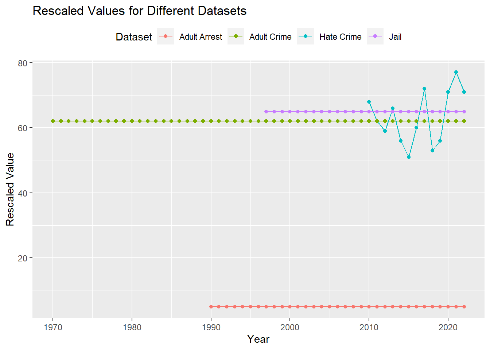
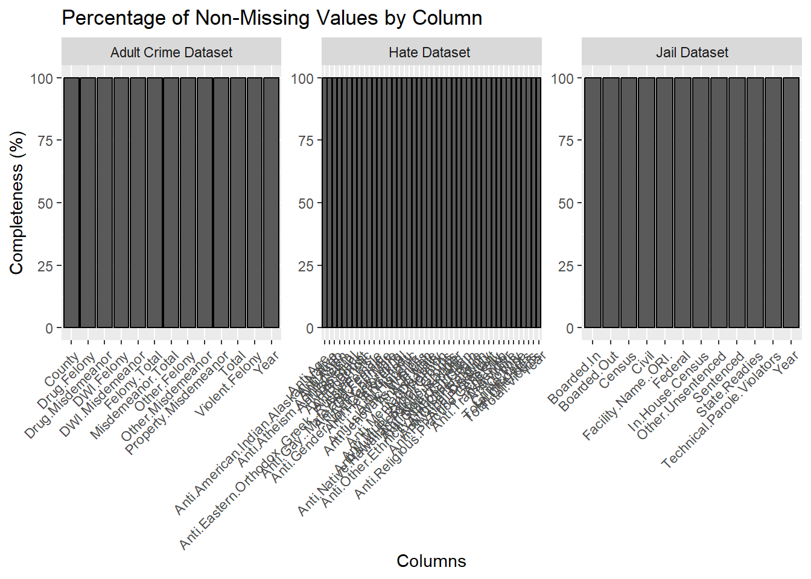
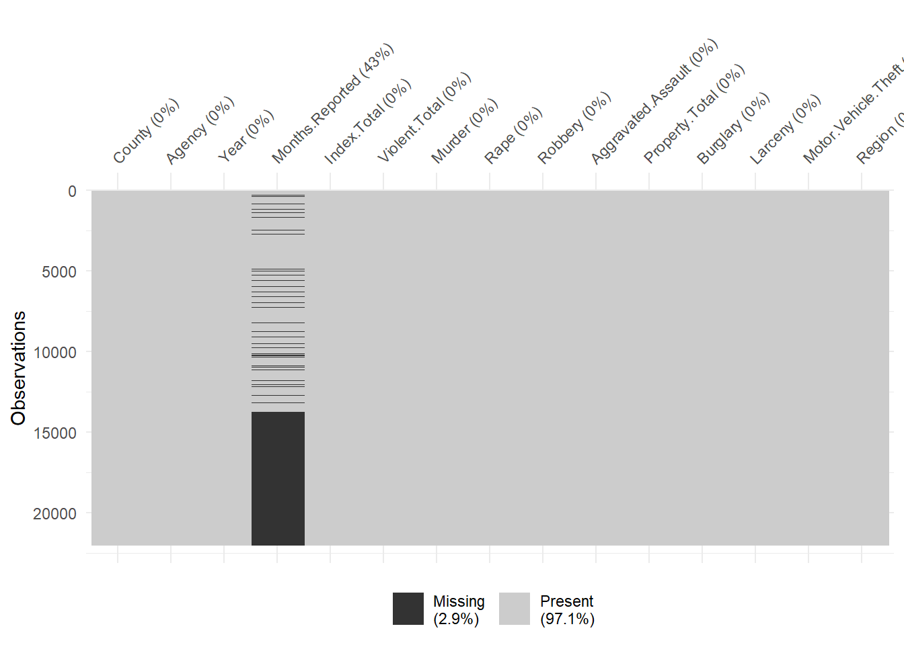
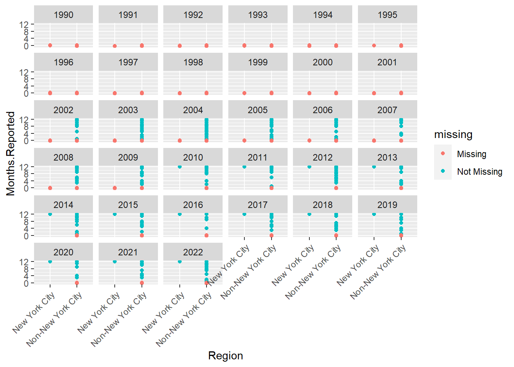

| Dimension | Count |
|---|---|
| No of Observations | 22048 |
| No of Variables | 15 |
2 Data Description
We delve into the analysis of four pivotal datasets which has been collected from multiple sources – Hate Crime by County and Bias Type, Adult Arrests (18 and older) by County, Index Crimes by County and Agency, and Jail Population by County. Through these lenses, we seek to unravel the complexities of crime, justice, and societal biases that define the state of New York.
2.1 Technical Description
2.1.1 Data Dimensions
Index Crimes by County and Agency :
The crime data is categorized into violent and property crimes, providing insights into different aspects of criminal activity. The “Region” column classifies counties into either New York City or Non-New York City, allowing for regional comparisons.
Adult Arrests (18 and older) by County :
The dataset consists of crime data categorized into felonies and misdemeanors, detailing counts for various crime types, including drug-related offenses and Driving While Intoxicated (DWI). It spans multiple years and provides a comprehensive view of criminal activities across different categories in various counties.Each row represents a specific county and year combination, and columns contain different crime-related metrics.
| Dimension | Count |
|---|---|
| No of Observations | 3286 |
| No of Variables | 13 |
Hate Crime by County and Bias Type :
The Hate Crime by County and Bias Type dataset includes information on hate crime incidents reported across 62 unique counties in New York from 2010 to 2022. It covers a range of attributes, such as crime type, race, color, national origin, ancestry, gender, religion, age, disability, and sexual orientation, providing detailed insights into the characteristics of reported incidents. The dataset records total incidents, victims, and offenders, offering a comprehensive view of hate crimes and bias types in the specified regions over the given period.
| Dimension | Count |
|---|---|
| No of Observations | 822 |
| No of Variables | 44 |
The Jail Population by County dataset spans 67 unique counties in New York from 1997 to 2022, providing insights into the average daily census, boarding status, and inmate categorization. Attributes like Sentenced, Civil, Federal, Technical Parole Violators, State Readies, and Other Unsentenced offer a nuanced understanding of the diverse inmate populations and their statuses within county facilities. This dataset contributes to a comprehensive analysis of the evolving dynamics of correctional populations over the years.
| Dimension | Count |
|---|---|
| No of Observations | 1723 |
| No of Variables | 12 |
2.1.2 Data Frequency
Each dataset, including Hate Crime by County and Bias Type, Adult Arrests by County, Index Crimes by County and Agency, and Jail Population by County, is updated on a yearly basis, providing an annual snapshot of the respective categories. This consistent yearly frequency enables a longitudinal analysis, offering insights into the trends and variations in these datasets over time by county.
2.1.3 Data Format
Note: For a comprehensive understanding of the Format of the dataset, it is advisable to refer to the metadata in the link below : Data set Description
2.2 Research Plan
Regional Disparities: Understanding the significant variations in crime rates across different counties and regions in New York
Crime Type Analysis: Analyzing the crimes exhibited by notable trends or fluctuations. Understanding the prevalence of different offenses, such as violent crimes, property crimes, or specific criminal activities, is crucial for targeted intervention.Information on
Law Enforcement Effectiveness: How effective have law enforcement agencies been in curbing specific types of crimes. Felony Breakdown, Misdemeanor Breakdown, type of felony (Drug, Violent, DWI, Other) and Misdemeanor.
Jail Population Analysis : Any correlation with the sentenced, Civil, Federal, Technical Parole Violators, State Readies.
Hate Crimes : Includes analysis on demographics, religions, Ethnicity , sexual orientation , disabilities , incidents and victims.
Impact of Societal Changes: Are there correlations between crime rates and broader societal changes, economic conditions, or demographic shifts.
2.3 Our Consideration of Period

Now, let’s dive into the nitty-gritty of our project. Imagine a time machine whisking us through the years from 1970 to 2022, exploring how things have changed on the crime scene. Picture this: we’re in 1996, peeking into why adults are getting into trouble and landing in jail more often. Fast forward to 2022, and we’re mixing and matching different time periods to uncover how adult crimes and jail arrests have evolved.
But our journey doesn’t stop there – we’re also digging into how hate crimes fit into the whole puzzle, especially during those times when arrests and crimes overlap. No fancy jargon, just a look at how things have shifted over the years. So, join us as we untangle this web of data, piece by piece!
2.4 Missing Value Analysis
Major issues which we have faced are missing values :
Index Crimes by County and Agency, where months’ data is absent, the chosen approach for addressing this issue is to opt for data exclusion.
2.4.1 Handling the missing values
The decision has been made to drop observations with missing values. This strategy ensures transparency in the data handling process and prioritizes a dataset without gaps, contributing to more robust analyses. The rationale for this approach lies in maintaining the integrity of the temporal and categorical dimensions of the data for comprehensive insights.
2.4.1.1 Jail Population by County
'data.frame': 1723 obs. of 12 variables:
$ Facility.Name..ORI. : chr "All NYC Facilities" "All NYC Facilities" "All NYC Facilities" "All NYC Facilities" ...
$ Year : int 2022 2021 2020 2019 2018 2017 2016 2022 2021 2020 ...
$ Census : int 5562 5467 4473 7234 8346 9152 9621 9931 9782 8219 ...
$ Boarded.Out : int 13 4 2 5 6 7 14 160 118 113 ...
$ Boarded.In : int 0 0 0 0 0 0 0 218 165 125 ...
$ In.House.Census : int 5549 5463 4471 7228 8340 9145 9607 9990 9828 8231 ...
$ Sentenced : int 347 184 225 800 1047 1277 1273 1856 1561 1556 ...
$ Civil : int 2 1 4 8 7 9 11 34 22 30 ...
$ Federal : int 85 75 63 75 95 113 115 1337 1306 1117 ...
$ Technical.Parole.Violators: int 53 244 368 738 718 683 658 228 609 742 ...
$ State.Readies : int 153 157 15 10 11 16 22 247 467 212 ...
$ Other.Unsentenced : int 4909 4803 3796 5597 6463 7047 7527 6288 5863 4574 ...2.4.1.2 Adult Crimes By County & Bias
| County | Year | Total | Felony.Total | Drug.Felony | Violent.Felony | DWI.Felony | Other.Felony | Misdemeanor.Total | Drug.Misdemeanor | DWI.Misdemeanor | Property.Misdemeanor | Other.Misdemeanor | |
|---|---|---|---|---|---|---|---|---|---|---|---|---|---|
| Length:3286 | Min. :1970 | Min. : 22.0 | Min. : 6 | Min. : 0.0 | Min. : 0.0 | Min. : 0.00 | Min. : 1.0 | Min. : 7 | Min. : 0.0 | Min. : 0.0 | Min. : 0.0 | Min. : 1 | |
| Class :character | 1st Qu.:1983 | 1st Qu.: 867.2 | 1st Qu.: 191 | 1st Qu.: 19.0 | 1st Qu.: 39.0 | 1st Qu.: 17.00 | 1st Qu.: 104.0 | 1st Qu.: 662 | 1st Qu.: 25.0 | 1st Qu.: 178.0 | 1st Qu.: 154.0 | 1st Qu.: 241 | |
| Mode :character | Median :1996 | Median : 1516.0 | Median : 368 | Median : 49.5 | Median : 77.0 | Median : 37.00 | Median : 197.5 | Median : 1180 | Median : 72.0 | Median : 328.0 | Median : 322.0 | Median : 454 | |
| NA | Mean :1996 | Mean : 6572.3 | Mean : 2250 | Mean : 492.8 | Mean : 688.2 | Mean : 66.91 | Mean : 1002.5 | Mean : 4322 | Mean : 859.7 | Mean : 616.4 | Mean : 1317.2 | Mean : 1529 | |
| NA | 3rd Qu.:2009 | 3rd Qu.: 4198.2 | 3rd Qu.: 1102 | 3rd Qu.: 183.8 | 3rd Qu.: 264.8 | 3rd Qu.: 76.00 | 3rd Qu.: 579.8 | 3rd Qu.: 3034 | 3rd Qu.: 252.8 | 3rd Qu.: 666.0 | 3rd Qu.: 836.8 | 3rd Qu.: 1167 | |
| NA | Max. :2022 | Max. :107786.0 | Max. :44632 | Max. :17442.0 | Max. :16217.0 | Max. :613.00 | Max. :15467.0 | Max. :73365 | Max. :29471.0 | Max. :8954.0 | Max. :33334.0 | Max. :24875 |
2.4.1.3 Hate Crime by County and Bias Type
| County | Year | Crime.Type | Anti.Male | Anti.Female | Anti.Transgender | Anti.Gender.Non.Conforming | Anti.Age. | Anti.White | Anti.Black | Anti.American.Indian.Alaskan.Native | Anti.Asian | Anti.Native.Hawaiian.Pacific.Islander | Anti.Multi.Racial.Groups | Anti.Other.Race | Anti.Jewish | Anti.Catholic | Anti.Protestant | Anti.Islamic..Muslim. | Anti.Multi.Religious.Groups | Anti.Atheism.Agnosticism | Anti.Religious.Practice.Generally | Anti.Other.Religion | Anti.Buddhist | Anti.Eastern.Orthodox..Greek..Russian..etc.. | Anti.Hindu | Anti.Jehovahs.Witness | Anti.Mormon | Anti.Other.Christian | Anti.Sikh | Anti.Hispanic | Anti.Arab | Anti.Other.Ethnicity.National.Origin | Anti.Non.Hispanic. | Anti.Gay.Male | Anti.Gay.Female | Anti.Gay..Male.and.Female. | Anti.Heterosexual | Anti.Bisexual | Anti.Physical.Disability | Anti.Mental.Disability | Total.Incidents | Total.Victims | Total.Offenders | |
|---|---|---|---|---|---|---|---|---|---|---|---|---|---|---|---|---|---|---|---|---|---|---|---|---|---|---|---|---|---|---|---|---|---|---|---|---|---|---|---|---|---|---|---|---|
| Length:822 | Min. :2010 | Length:822 | Min. :0.000000 | Min. :0.0000 | Min. :0.0000 | Min. :0.00000 | Min. :0.0000 | Min. : 0.000 | Min. : 0.000 | Min. :0.000000 | Min. : 0.0000 | Min. :0 | Min. :0.00000 | Min. :0 | Min. : 0.000 | Min. : 0.0000 | Min. :0.00000 | Min. : 0.000 | Min. : 0.00000 | Min. :0 | Min. :0.000000 | Min. :0.00000 | Min. :0.00000 | Min. :0.00000 | Min. :0.00000 | Min. :0.00000 | Min. :0.000000 | Min. :0.00000 | Min. :0.000000 | Min. : 0.0000 | Min. :0.00000 | Min. : 0.0000 | Min. :0 | Min. : 0.00 | Min. :0.0000 | Min. :0.0000 | Min. :0.000000 | Min. :0.000000 | Min. :0.00000 | Min. :0.000000 | Min. : 1.00 | Min. : 1.00 | Min. : 1.00 | |
| Class :character | 1st Qu.:2013 | Class :character | 1st Qu.:0.000000 | 1st Qu.:0.0000 | 1st Qu.:0.0000 | 1st Qu.:0.00000 | 1st Qu.:0.0000 | 1st Qu.: 0.000 | 1st Qu.: 0.000 | 1st Qu.:0.000000 | 1st Qu.: 0.0000 | 1st Qu.:0 | 1st Qu.:0.00000 | 1st Qu.:0 | 1st Qu.: 0.000 | 1st Qu.: 0.0000 | 1st Qu.:0.00000 | 1st Qu.: 0.000 | 1st Qu.: 0.00000 | 1st Qu.:0 | 1st Qu.:0.000000 | 1st Qu.:0.00000 | 1st Qu.:0.00000 | 1st Qu.:0.00000 | 1st Qu.:0.00000 | 1st Qu.:0.00000 | 1st Qu.:0.000000 | 1st Qu.:0.00000 | 1st Qu.:0.000000 | 1st Qu.: 0.0000 | 1st Qu.:0.00000 | 1st Qu.: 0.0000 | 1st Qu.:0 | 1st Qu.: 0.00 | 1st Qu.:0.0000 | 1st Qu.:0.0000 | 1st Qu.:0.000000 | 1st Qu.:0.000000 | 1st Qu.:0.00000 | 1st Qu.:0.000000 | 1st Qu.: 1.00 | 1st Qu.: 1.00 | 1st Qu.: 1.00 | |
| Mode :character | Median :2016 | Mode :character | Median :0.000000 | Median :0.0000 | Median :0.0000 | Median :0.00000 | Median :0.0000 | Median : 0.000 | Median : 1.000 | Median :0.000000 | Median : 0.0000 | Median :0 | Median :0.00000 | Median :0 | Median : 0.000 | Median : 0.0000 | Median :0.00000 | Median : 0.000 | Median : 0.00000 | Median :0 | Median :0.000000 | Median :0.00000 | Median :0.00000 | Median :0.00000 | Median :0.00000 | Median :0.00000 | Median :0.000000 | Median :0.00000 | Median :0.000000 | Median : 0.0000 | Median :0.00000 | Median : 0.0000 | Median :0 | Median : 0.00 | Median :0.0000 | Median :0.0000 | Median :0.000000 | Median :0.000000 | Median :0.00000 | Median :0.000000 | Median : 3.00 | Median : 3.00 | Median : 3.00 | |
| NA | Mean :2016 | NA | Mean :0.006083 | Mean :0.0219 | Mean :0.1436 | Mean :0.03893 | Mean :0.0365 | Mean : 0.365 | Mean : 1.765 | Mean :0.006083 | Mean : 0.4501 | Mean :0 | Mean :0.07908 | Mean :0 | Mean : 4.062 | Mean : 0.2092 | Mean :0.01582 | Mean : 0.382 | Mean : 0.05475 | Mean :0 | Mean :0.009732 | Mean :0.07056 | Mean :0.00365 | Mean :0.00365 | Mean :0.01095 | Mean :0.00365 | Mean :0.001216 | Mean :0.02433 | Mean :0.006083 | Mean : 0.3151 | Mean :0.08151 | Mean : 0.3078 | Mean :0 | Mean : 1.26 | Mean :0.1764 | Mean :0.1095 | Mean :0.001216 | Mean :0.004866 | Mean :0.01217 | Mean :0.006083 | Mean : 10.04 | Mean : 10.41 | Mean : 11.33 | |
| NA | 3rd Qu.:2020 | NA | 3rd Qu.:0.000000 | 3rd Qu.:0.0000 | 3rd Qu.:0.0000 | 3rd Qu.:0.00000 | 3rd Qu.:0.0000 | 3rd Qu.: 0.000 | 3rd Qu.: 2.000 | 3rd Qu.:0.000000 | 3rd Qu.: 0.0000 | 3rd Qu.:0 | 3rd Qu.:0.00000 | 3rd Qu.:0 | 3rd Qu.: 3.000 | 3rd Qu.: 0.0000 | 3rd Qu.:0.00000 | 3rd Qu.: 0.000 | 3rd Qu.: 0.00000 | 3rd Qu.:0 | 3rd Qu.:0.000000 | 3rd Qu.:0.00000 | 3rd Qu.:0.00000 | 3rd Qu.:0.00000 | 3rd Qu.:0.00000 | 3rd Qu.:0.00000 | 3rd Qu.:0.000000 | 3rd Qu.:0.00000 | 3rd Qu.:0.000000 | 3rd Qu.: 0.0000 | 3rd Qu.:0.00000 | 3rd Qu.: 0.0000 | 3rd Qu.:0 | 3rd Qu.: 1.00 | 3rd Qu.:0.0000 | 3rd Qu.:0.0000 | 3rd Qu.:0.000000 | 3rd Qu.:0.000000 | 3rd Qu.:0.00000 | 3rd Qu.:0.000000 | 3rd Qu.: 9.00 | 3rd Qu.: 10.00 | 3rd Qu.: 11.00 | |
| NA | Max. :2022 | NA | Max. :1.000000 | Max. :6.0000 | Max. :8.0000 | Max. :3.00000 | Max. :9.0000 | Max. :16.000 | Max. :18.000 | Max. :1.000000 | Max. :68.0000 | Max. :0 | Max. :4.00000 | Max. :0 | Max. :90.000 | Max. :12.0000 | Max. :1.00000 | Max. :10.000 | Max. :10.00000 | Max. :0 | Max. :2.000000 | Max. :4.00000 | Max. :1.00000 | Max. :1.00000 | Max. :3.00000 | Max. :1.00000 | Max. :1.000000 | Max. :4.00000 | Max. :3.000000 | Max. :17.0000 | Max. :4.00000 | Max. :21.0000 | Max. :0 | Max. :36.00 | Max. :8.0000 | Max. :6.0000 | Max. :1.000000 | Max. :2.000000 | Max. :1.00000 | Max. :1.000000 | Max. :148.00 | Max. :148.00 | Max. :160.00 |
2.4.1.4 Adult Arrests (18 and older) by County
'data.frame': 22048 obs. of 15 variables:
$ County : chr "Albany" "Albany" "Albany" "Albany" ...
$ Agency : chr "Albany City PD" "Albany County Park PD" "Albany County Sheriff" "Albany County State Police" ...
$ Year : int 2022 2022 2022 2022 2022 2022 2022 2022 2022 2022 ...
$ Months.Reported : int 12 12 12 12 12 12 12 12 12 NA ...
$ Index.Total : int 4746 1 127 131 1 434 40 312 2860 9717 ...
$ Violent.Total : int 944 0 11 42 0 24 8 48 122 1253 ...
$ Murder : int 14 0 0 0 0 0 0 0 2 17 ...
$ Rape : int 70 0 3 26 0 9 0 7 1 131 ...
$ Robbery : int 233 0 1 5 0 5 3 6 45 305 ...
$ Aggravated.Assault : int 627 0 7 11 0 10 5 35 74 800 ...
$ Property.Total : int 3802 1 116 89 1 410 32 264 2738 8464 ...
$ Burglary : int 566 0 10 7 0 25 5 25 189 897 ...
$ Larceny : int 2670 1 97 77 1 371 26 214 2448 6795 ...
$ Motor.Vehicle.Theft: int 566 0 9 5 0 14 1 25 101 772 ...
$ Region : chr "Non-New York City" "Non-New York City" "Non-New York City" "Non-New York City" ...
2.4.1.5 Index Crimes by County and Agency

